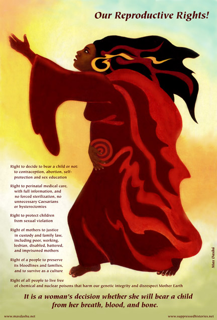

Fine print (11 x 17) $20. plus shipping:
Use button below for North America ($4. shipping)
Use button below for all other countries ($8. shipping)
Our Reproductive Rights
Right to decide to bear a child or not:
to contraception, abortion, self-protection and sex education
Right to perinatal medical care, with
full information, and no forced sterilizations, no unnecessary Caesarians
or hysterectomies
Right to protect children from sexual
violation
Right of mothers to justice in custody
and family law, including poor, working, lesbian, disabled, battered,
and imprisoned mothers
Right of a people to preserve its bloodlines
and families, and to survive as a culture
Right of all people to live free of
chemical and
nuclear poisons that harm our genetic integrity
and disrespect Mother Earth
It is a woman's decision whether
she will bear a child
from her breath, blood and bone.
//\\//\\//\\//\\//\\//\\//\\//\\//\\//\\//\\//\\//\\//\\//\\//\\//\\//\\
Safe, non-experimental birth
control.
Medical care for all.
Educate the youth about their
options,
and how to protect themselves.
No more violence against women.
No coercion. No forced sterilization,
no forced childbearing.
Give imprisoned mothers contact
with their children,
and children connection with their mothers.
You can also purchase by check or money order
|
|

A woman has a right to decide whether and how she will
bear children. Forcing her to go through pregnancy and birth against
her will is an assault on her humanity. She’s not a machine; it
is her body and life that are at stake, and bringing a child into the
world falls to her responsibility. Every woman has a right to physical
integrity, safety, and the dignity of self-determination.
Criminalizing abortion (or birth control) is no help to “the family”
when its members’ health and economic survival are threatened,
and working mothers’ access to childcare is extremely limited.
Restricting teen women’s access to birth control
information and methods results in millions of immature mothers without
partners or job skills. Ideologues who want to bar teens’ access
to sex education and birth control are also blocking information about
safer sex practices that prevent the spread of HIV-AIDS and other sexually
transmitted diseases. Some, such as HPV, can later cause cervical cancer
to develop.
Poor and young mothers' lack of access to medical care
and perinatal support services leads to a shockingly high infant mortality
rate (and maternal mortality too) among some US communities.
Many women of color and disabled women have been subjected
to forced sterilization and medical experimentation without informed
consent in the past four decades. Government agencies have even imposed
risky methods like Norplant hormonal implants on women as a condition
for receiving benefits.
But even rich and white and able-bodied women are subjected
to unnecessary hysterectomies and Caesarian sections, whose rates have
escalated dramatically in recent years. The ability to schedule deliveries
may be convenient for doctors, but they don’t tell the women that
hospitals will then oblige them to have Caesareans for all later births.
(the surgery weakens the abdominal wall, especially when only one layer
of flesh is sutured, as is now common).
Imprisoned mothers have no recourse to criminal neglect
of their medical needs. Some are forced to give birth in shackles; most
are deprived of contact with their babies after birth. These mothers
are also separated from their other children, and often permanently
stripped of custody—even though many are in prison because of
attempts to provide for those children.
Another group of mothers who are treated as subhumans
without rights are “surrogate” mothers. Their economic need
(and sometimes their generosity) leads to essential sale of their maternal
entitlements, ferociously enforced by surrogacy contract law.
Violence against women has a huge impact on reproductive
rights. Abusive partners often escalate their battering when a woman
becomes pregnant, often targeting their punches and kicks to her belly.
Rape, whether by strangers, boyfriends or relatives, creates an especially
urgent need to terminate a pregnancy. Girls are the group least likely
to be able to access abortions for rape-pregnancies. The limitations
proposed in many states would legally subject girls to the consent of
an incestuous father.
|